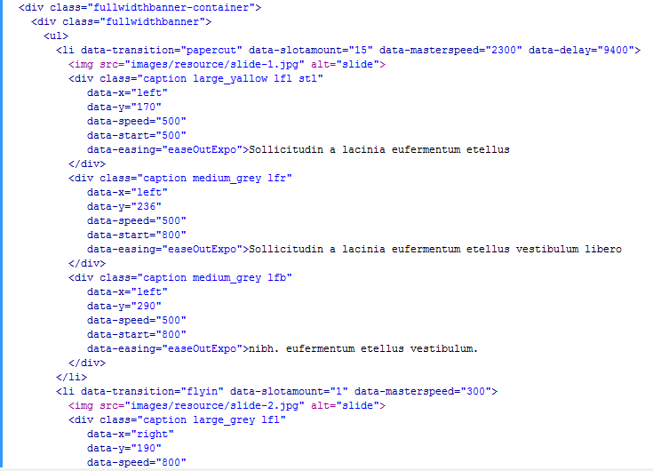

Created: 03/08/2013
By: ThemeBazaar
Email: info@extracoding.com
Thank you for purchasing our template. If you have any questions that are beyond the scope of this help file, please feel free to email via my user page contact form here. Thanks so much!
This template is a responsive layout with full width and more columns. Homepage is fullwidth page, main slider is wrapped in <div class="fullwidthbanner-container">. Posts on listing pages and detail pages are wrapped in <div class="container"> and top banner on inner pages is wrapped in <div class="banner">.
If you would like to edit the color any elements in one of these pages, you would do the following either in style.css
If you find that your new style is not overriding, it is most likely because of a specificity problem. Scroll down in your CSS file and make sure that there isn't a similar style that has more weight.
So, to ensure that your new styles are applied, make sure that they carry enough "weight" and that there isn't a style lower in the CSS file that is being applied after yours.
This template is using six CSS files in this template.
common.css, responsive.css and style.css are being used commonly in the template. slider.css is used for homepage main slider. prettyphoto.css is being used for light box on gallery page.
If you would like to edit a specific section of the site, simply find the appropriate label in the CSS file, and then scroll down until you find the appropriate style that needs to be edited.
This template used four Javascript files.
/*** Dialog Script ***/
$("#dialog-login, #dialog-search").dialog({
autoOpen: false,
draggable: false,
show: {effect:'drop', direction:'left'},
hide: {effect:'drop', direction:'right'}
});
/*** Trigger Dialog ***/
$('.user-login').on('click', this, function(e){
$('.dialog-overlay').fadeIn();
$( "#dialog-login" ).dialog('open');
e.preventDefault();
});
$('.user-search').on('click', this, function(e){
$('.dialog-overlay').fadeIn();
$( "#dialog-search" ).dialog('open');
e.preventDefault();
});
$('.ui-dialog .ui-dialog-titlebar-close').click( function(){
$('.dialog-overlay').fadeOut();
});
/*** hide elements on ESCAPE ***/
$(document).bind('keydown', function(e) {
if (e.keyCode === 27) {
$(".dialog-overlay").fadeOut();
}
});
function dialogLogin_size (){
var resolution = $(window).width();
if(resolution <= 480){
var winW = $(window).width();
$("#dialog-login, #dialog-search").dialog( "option", "width", winW );
}
if(resolution > 480){
$("#dialog-login, #dialog-search").dialog( "option", "width", 400 );
}
} // dialogLogin_size function ends
$(window).resize( function() {
menuTablet();
dialogLogin_size();
});
I have used all the images from shutterstock and are for preview purpose only.
Once again, thank you so much for purchasing this template. As I said at the beginning, I'd be glad to help you if you have any questions relating to this template. No guarantees, but I'll do my best to assist. If you have a more general question relating to the templates on ThemeForest, you might consider visiting the forums and asking your question in the "Item Discussion" section.
Themebazaar